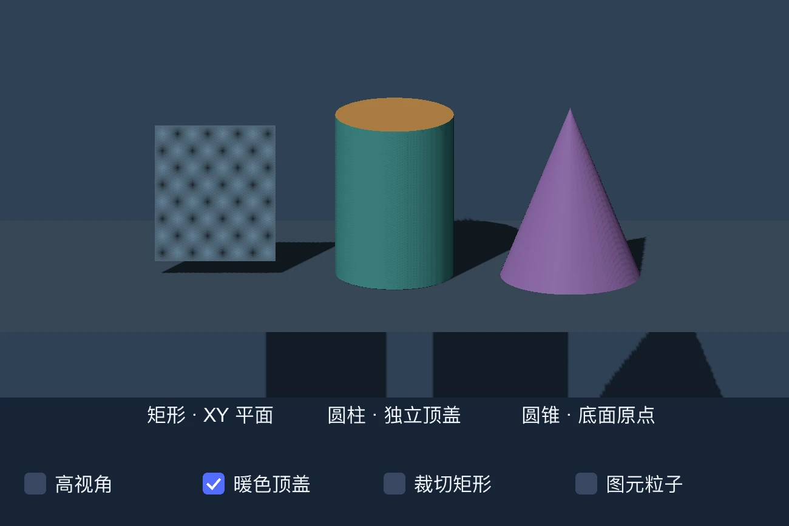
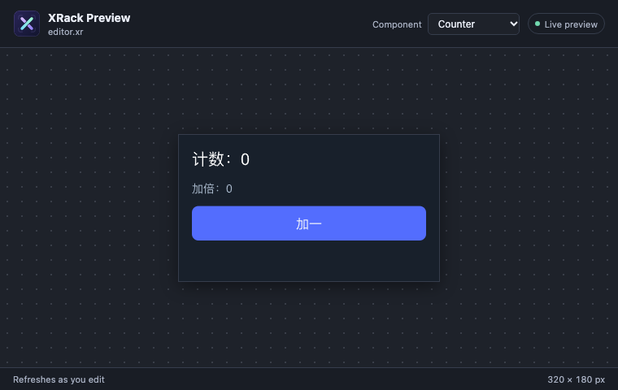

XRack
A declarative framework for native desktop UI
Compose your interface in .xr and write app logic in Rust or Python.
Compose interfaces from components
Combine text, buttons, and layouts in a component. Bindings connect values, and callbacks handle user actions.
export component Counter inherits Window {
in-out property <int> count: 0;
VerticalLayout {
Text { text <- "Count: " + root.count; }
Text { text <- "Doubled: " + root.count * 2; }
increment := Button {
text: "Increment";
clicked => { root.count += 1; }
}
}
}Doubled
Click Increment to see both text bindings update.
Compose 2D and 3D in one window
Place a SceneView3D in a regular layout and bind its model, camera, and lighting in .xr. Update the scene from a button or pick objects inside the viewport.


Editor workflow
See changes as you edit.
Open an .xr file to preview and interact with a component. For apps running in live-reload mode, attach to inspect the component tree, read property values, or pick a control in its native window.
Compiler & runtime
One interface, two execution paths.
The compiler lowers .xr into a typed xr dialect. The optimized MLIR can run interactively or be compiled to Rust ahead of time.
.xrComponents, properties, callbacksxr MLIRVerification and UI optimizationsGet started
Open your first native window.
With Bazel or Bazelisk and JDK 17+, run the counter from the repository. For an existing Rust app, follow the Cargo guide.
macOSLinuxWindows
git clone https://github.com/smallsunsun1/xrack.git
cd xrack
bazel run //examples/counter:counter